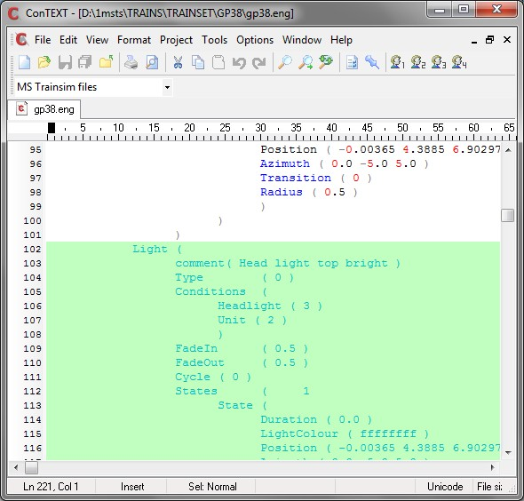
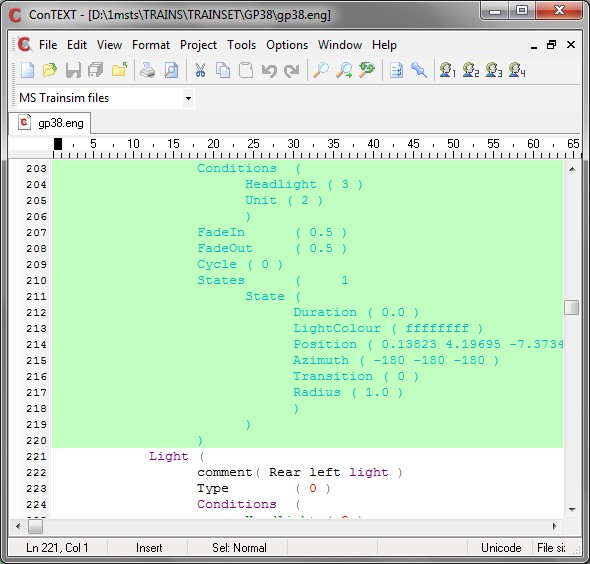

When you add an AI-light to your engine, the two most common mistakes (and I make both on a regular basis) are:
- not incrementing the number of lights at the top of the light definitions; and
- not copying all the brackets when copying a light () definition.
Failure to avoid either/both of these errors results in the infamous MSTS "phone home".
You create an AI-light in a player locomotive by copying the existing light definition and changing the conditions; you then increment the number_of_different_light_specifications
(see above) by one.
Let's start by using the GP38 as our working model. Open the gp38.eng file (now you HAVE made a backup first, haven't you?). Scroll down to the Lights section.
You will find
Lights ( 9
This tells us that there will be nine light definitions.
They are
- Sphere of light
- Head light dim
- Head light bright
- Head light bright
- Front right flashing light
- Front left flashing light
- Rear right light
- Rear left light
- Rear red light
For an AI locomotive, we really only need the headlights and the flashing lights, so we'll copy definitions 3,4,5,6 and modify those.
As I said before, it's so easy to mess up the brackets, so what I do is first create a demarcated space where the copied light definitions will go.
This is a snippet of code which crosses the boundary between the second-last and the last light.
<start snip>
Light (
Azimuth ( -180 -180 -180 )
Transition ( 0 )
Radius ( 1.0 )
)
)
)
States ( number_of_states
State ( define each state
) <- bracket to close State
)<-bracket to close States
) <- bracket to close Light
Light (
comment( Rear red light )
Type ( 0 )
<end snip>
You can clearly see the three brackets closing one light definition, and the next Light definition commencing.
I move the cursor to the space between the definitions and type the lines shown in blue
<start snip>
Light (
Azimuth ( -180 -180 -180 )
Transition ( 0 )
Radius ( 1.0 )
)
)
Comment ( ========= begin AI lights ========= >
Comment ( ========= end AI lights ========= >
Light (
comment( Rear red light )
Type ( 0 )
<end snip>
Now I scroll up to the first Light definition I want (Light ( Head light top bright )

and I mark the block all the way down to the end of "front left flashing light" - ie I stop before going into the Light entitled "rear right light".

Make absolutely sure that you have marked the three brackets as shown in the screenshot above.
Now press Ctrl-C to Copy.Scroll down to the blank line between the two AI comment lines you created a moment ago and press Ctrl-V to paste the light definitions into this area.
Now it's a relatively simple exercise to replace the lines
Conditions (
Headlight ( 2 )
Unit ( 2 )
)
in each of the four AI-light definitions with
Conditions (
Control ( 1 )
Unit ( 2 )
Service ( 2 )
TimeOfDay ( 0 )
)
As you change each light, place an "AI" at the beginning of the comment line so that
comment( Headlight top bright )
now reads
comment( AI Head light top bright )
Finally, scroll up to the very beginning of the Lights section and replace
Lights ( 9
with
Lights ( 13
You can check your work by using ConTEXT's bracket-matching feature to ensure your bracketing is correct. You'll soon find out if you've made an error as MSTS will either crash on loading the sim, or on loading an activity!
Save and quit. Now drop down to here to bypass reading about your second choice.